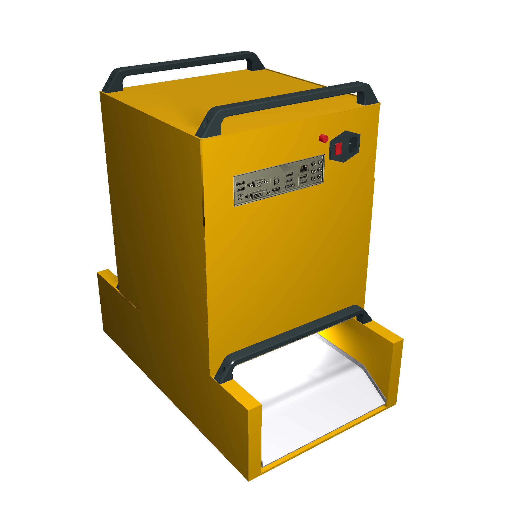
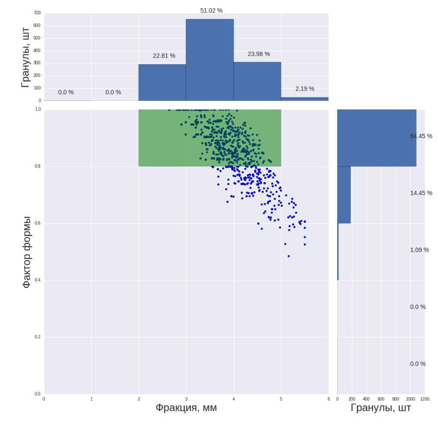
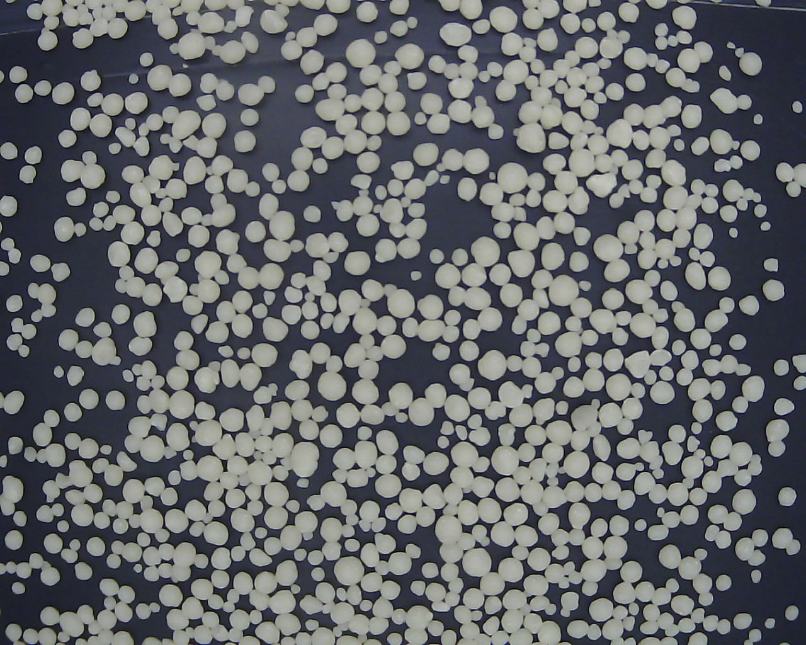

Продукты
DotPulse-RSC
«Устройство обеспечивает оперативный контроль размера, формы и цвета гранул (оптико-электронный метод на основе машинного зрения, Python и OpenCV). Сейчас 6 таких приборов работают на АО “Апатит”, г. Череповец, анализируя готовую продукцию (промышленные минеральные удобрения).»



- Создан для производственных условий.
- Система роботизирована, обладает встроенным компьютером и устройством отбора гранул с ленты конвейера или в закрытой трубе.
- Легкая замена ключевых частей, возможность работы в качестве дата-сервера.
- Онлайн анализ размера, формы и цвета гранул в настраиваемом диапазоне (работает при диапазоне 1-10 мм, потенциал от 0.01 мм до необходимого размера)
Особенности:
DotPulse-RSC
Характеристики
| Уровень автоматизации устройства | 3 уровень, работа в качестве дата-сервера, система самодиагностики, расчет параметров |
|---|---|
| Принцип измерения | оптический |
| Диапазон измерений, мм | 1 – 10 |
| Время измерения, мин | 5 |
| Тип образцов | гранулы минеральных удобрений |
| Масса образца, г | 50 – 1000 |
| Область анализа, д х ш, см | 30х30 |
| Измеряемые параметры | размер, площадь, сферичность, цвет |
| Масса прибора, кг | 15 |
| Масса системы отбора пробы, кг | 50 |
| Габариты прибора ш х д х в, м | 0.5 х 0.5 х 0.6 |
| Габариты системы отбора пробы ш х д х в, м | 1 х 1 х 1.2 |
| Рабочая система | Quad Core PC, Ubuntu 20.04 |
| Программное обеспечение | DotPulse |